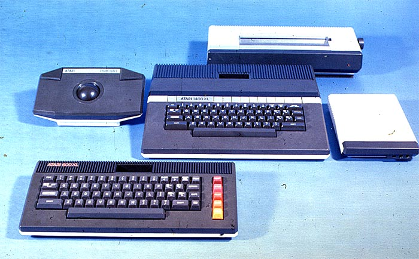

UPDATE (10/02/99): The above image has been updated with a new slide scanner with higher resolution and far better imaging quality. Due to this new scanner, the above photo is now completely readable and you can clearly see the markings on the 1400XL and what appeared to be an 800XL is in fact the very same type of 600XL that is currently part of the Atari Museum.
This image turned up a group a 35mm slides donated to the Atari Museum.
Amazingly it was noticed that not only were we looking
at brown cased Atari XL's, but in fact after blowing up the image and carefully
examining the model #'s it was discovered that what is displayed in the above
image are prototypes of an Atari 600XL and 1400XL computer system surrounded
by the released products Atari CX-22 trakball, Atari 1027 Printer and Atari
1030 modem. Although nearly identical to the Atari 600
that is current part of the AHS museum, the above Atari 600XL has multi-colored
function keys "ala Atari 800".